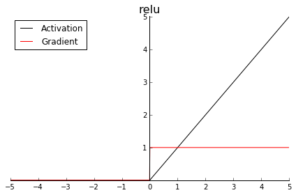

本文记录了神经网络中常用的几个激活函数以及它们的导数；深度学习模型常用的一些评价指标以及它们的数学公式。
激活函数
下图为一个简单的多层感知机：

如果没有激活函数，那么神经网络的权重、偏置全是线性的仿射变换（affine transformation）:

也就是说，如果没有激活函数，那么无论是多少层的感知机，效果都和一层一样，输出只是输入的线性变换。无法解决任何一个简单的非线性问题，而现实需要解决的问题几乎不会是线性问题。
因此，激活函数是用来加入非线性因素的，因为线性模型的表达能力不够。
神经网络的激活函数（activation function）可以扭曲翻转特征空间，使特征空间映射到高维，在高维特征空间中寻找线性的边界，即寻找一个超平面，实现边界的分割。
常见的激活函数有3种：

sigmoid

sigmoid将输入挤压进0到1区间（这和概率的取值范围一致），这在二分类任务中很常见。
softmax
在多分类任务中，输出层经常加入softmax函数，完成多分类的目的。
假设我们有一个有n个元素的数组$V_n$，$V_i$表示V中的第i个元素，那么这个元素的softmax值就是
softmax将多个输出限定在[0,1]之间，并且满足概率之和为1，通过softmax可以将信号呈指数的加大或者减少，突出想要增强的信息。
在多分类任务中，为了配合softmax激活函数，损失函数采用交叉熵损失去评估真实标签与预测值之间分布的差异。
交叉熵损失公式为：
看起来比较复杂，而实际上，由于多分类一般使用one-hot编码，标签中除去正确的一类，其他都为0。
比如样本属于第j类，则只有$y^j$有值，且为1，其他都为0。因此，交叉熵损失可以简化为：
tanh

tanh的形状和sigmoid类似，只不过tanh将“挤压”输入至区间(-1, 1)。因此，中心为零，（某种程度上）激活值已经是下一层的正态分布输入。
至于梯度，它有一个大得多的峰值1.0（同样位于z = 0处），但梯度下降得更快，当|z|的值到达3时就已经接近零了。这是所谓梯度消失（vanishing gradients）问题背后的原因，会导致网络的训练进展变慢。现在一般不用这个激活函数了。
ReLU
它是目前通常使用的激励函数。ReLU解决了了sigmoid、tanh中常见的梯度消失问题，同时也是计算梯度最快的激励函数。

它并不会把输入映射到某一区间——它只是保留正值，并将所有负值转化为零。
使用ReLU的积极方面是它的梯度要么是1（正值），要么是0（负值）——再也没有梯度消失了！这一模式使网络更快收敛。
在代码中，只需要一个if else即可实现，比其他的激活函数运算快得多。
另一方面，负值时梯度为0导致所谓的“死亡神经元”问题，也就是输入持续为负的神经元激活值总是为零。
因此，出现了Leaky ReLU函数，$f(x) = max(0.01x, x)$，这样在小于0的时候也有一个梯度。
理论上来讲，Leaky ReLU有ReLU的所有优点，外加不会有Dead ReLU问题，但是在实际操作当中，并没有完全证明Leaky ReLU总是好于ReLU。
评价指标
目前建模任务目标有几大类：分类、回归、聚类等，不同的目标有不同的模型评价方式。
分类
分类任务评价指标有精确率、召回率、准确率、F-Score、ROC-AUC 、混淆矩阵
精确率与召回率多用于二分类问题。
精确率（Precision）指的是模型预测为正的样本中有多少是真正的正样本；
召回率（Recall）指的是所有正样本有多少被模型判为正样本，即正样本有多少被正确找出，也被称为灵敏度（sensitive）。
我们先通过韦恩图理解一下精确率与召回率：
设模型预测出的正样本prediction集合为A，真正的正样本truth集合为B，则有如下韦恩图：

精确率：
召回率：
即两个正样本的交集部分分别与预测值的正样本、真实值的正样本的比值。
接下来通过混淆矩阵理解精确率与召回率：
混淆矩阵

True Positive(真正，TP)：将正类预测为正类数；
True Negative(真负，TN)：将负类预测为负类数；
False Positive(假正，FP)：将负类预测为正类数$\rightarrow$误报 (Type I error)；
False Negative(假负，FN)：将正类预测为负类数$\rightarrow$漏报 (Type II error)。
因此，精确率和召回率也可以用混淆矩阵表示：
本质上，用混淆矩阵表示的精确率和召回率，和用韦恩图计算出来的是一样的。
准确率
即预测正确的样本占所有样本的比例：
F-Score
综合考虑Precision和Recall，是Precision和Recall加权调和平均：
当$\alpha = 1$时，就是常见的$F1\ score$，也就是
ROC曲线
ROC（Receiver Operating Characteristic）曲线是以假正率（FP_rate，简称FPR）和真正率（TP_rate，简称TPR）为轴的曲线，ROC曲线下面的面积我们叫做AUC（area under curve）：
其中 $TPR = \frac{TP}{TP + FN}（与recall的公式一样）, \quad FPR = \frac{FP}{FP+TN}$
$TPR$ 的含义是原始正样本中，被正确预测为正的比例；
$FPR$ 的含义是原始负样本中，被错误识别为正的比例。
ROC曲线绘制过程：
二分类任务，样本个数为N，激活函数为sigmoid，则输出值区间为（0，1），我们会设置一个阈值（threshold），假设高于阈值的预测为正类，低于阈值的预测为负类。
当阈值为1时，所有的输出都低于阈值，即所有样本都被认为是负类。那么TPR，也就是正样本中被识别为正样本的比例为0。而FPR，即负样本被识别为正样本的比例也为0。对应ROC曲线中的（0，0）。
当阈值为0时，所有的输出都高于阈值，即所有样本都被认为是正类。那么TPR，也就是正样本中被识别为正样本的比例为1。而FPR，即负样本被识别为正样本的比例也为1。对应ROC曲线中的（1，1）。
当我们不断调节阈值，就可以得到N组由（FPR，TPR）组成的点，将这些点相邻地连接起来，就得到了ROC曲线。而这个曲线下的面积就是AUC。
在预测值为随机值的情况下，ROC曲线对应上图中的蓝色虚线，$AUC=0.5$。
所以一个有意义的模型的AUC一定是大于0.5的，越接近0.5说明模型越接近于随机猜测。当然如果$AUC<0.5$，我们可以通过规定高于阈值为负类，低于阈值为正类，使得ROC曲线以虚线为对称轴对称到$AUC>0.5$。
而如果曲线经过左上角的（0，1）点，则表示我们可以找到一个阈值，使得模型可以完美预测所有样本。
回归
回归任务评价指标有RMSE(平方根误差)、MAE（平均绝对误差）、MSE(平均平方误差)
聚类
聚类任务评价指标有兰德指数、互信息、轮廓系数